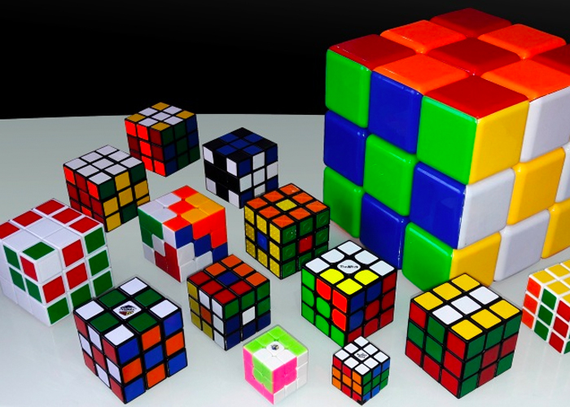
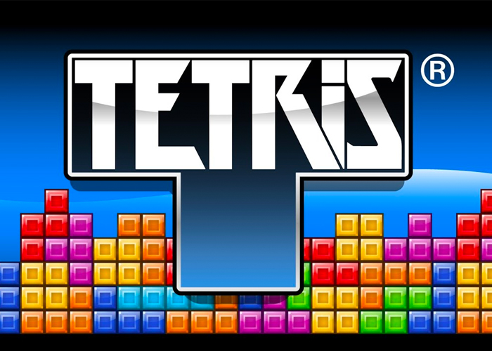
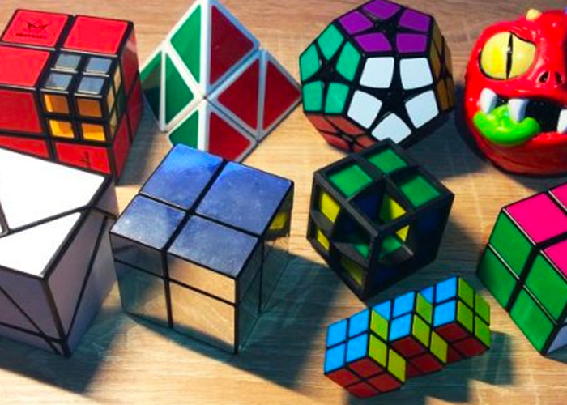

Welcome
to the official homepage of UCSB Tetricks! The purpose of this club is to allow people interested in Tetris or other puzzle games to come together and play competitvely and for fun. The club was founded by Keith Oshima, fourth year biology student. Feel free to start playing Tetris using the Jstris client (link above).